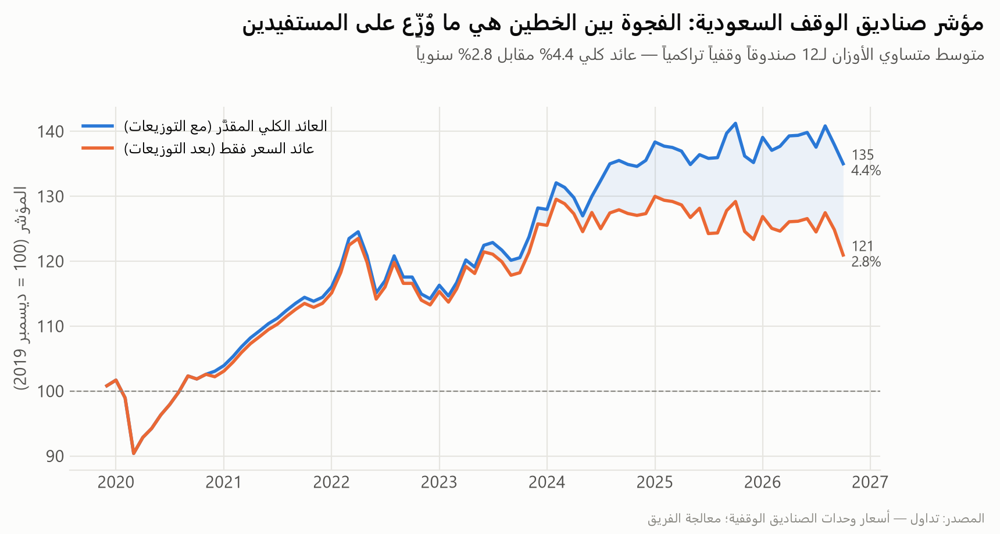
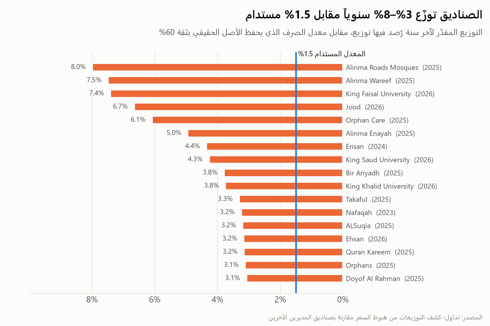
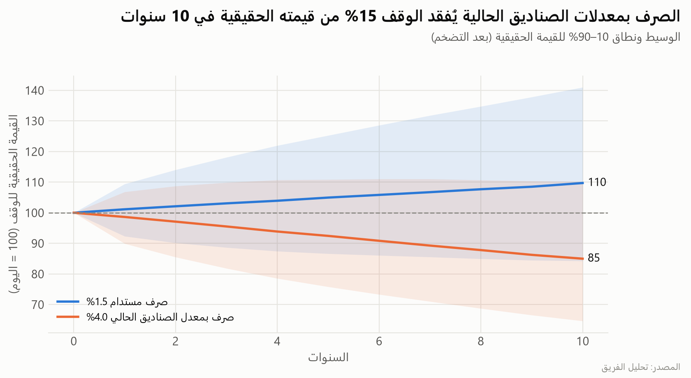
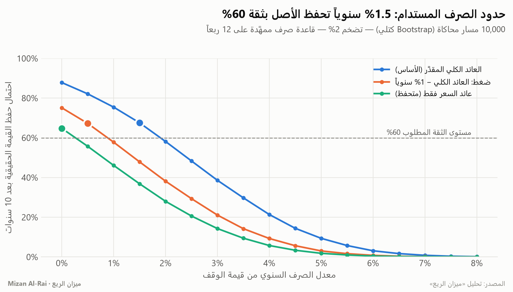
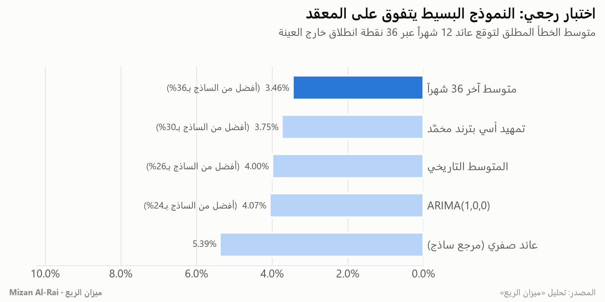
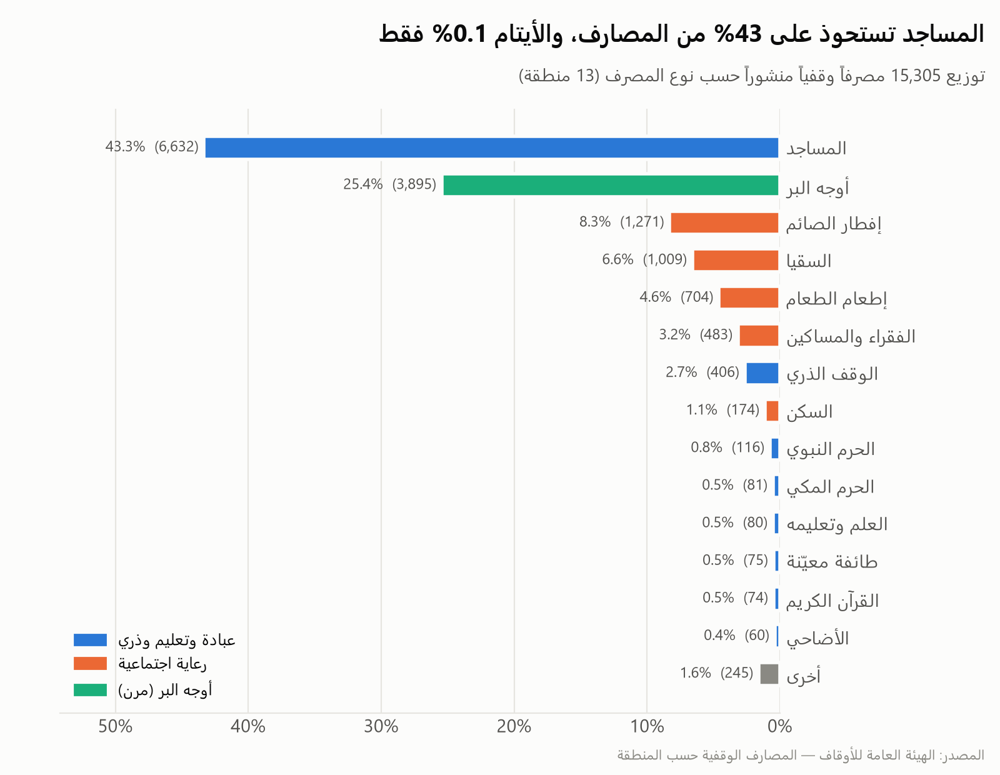
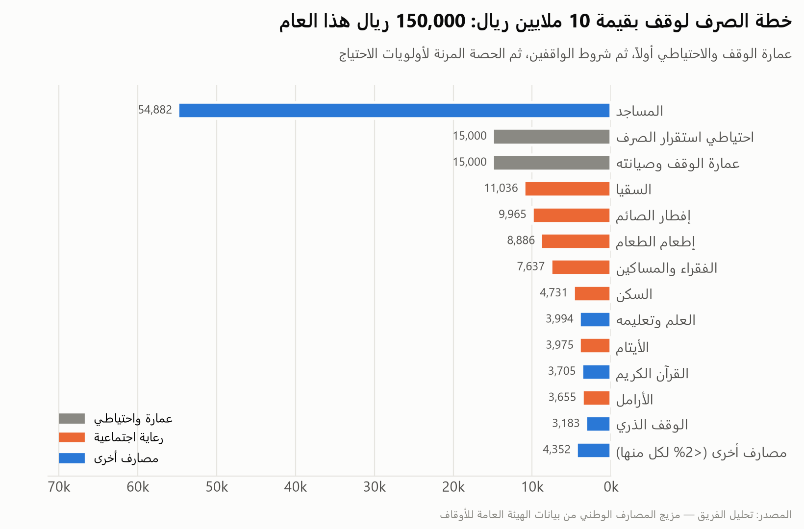

مسابقة تحليل البيانات للقطاع غير الربحي — الملخص التنفيذي
كم يصرف الوقف دون أن يأكل أصله؟
منصة التنبؤ الذكي بالتدفقات المالية للوقف العائلي والأهلي: تنبؤ بالعوائد، وسقف صرف مستدام، وتوزيع شرعي للمصارف
الخلاصة: الأصول الوقفية المدرجة في السوق السعودية ولّدت عائداً كلياً مقدَّراً
4.4% سنوياً، أي نحو 2.4% بعد التضخم. لذلك فإن معدل الصرف الذي يحفظ القيمة الحقيقية للوقف عشر سنوات
بثقة 60% هو 1.5% سنوياً فقط، بينما توزّع الصناديق الوقفية فعلياً 3%–8% (الوسيط 3.8%، أي نحو 4.0% وهو المعدل المستخدم في المحاكاة).
الاستمرار بهذا المعدل يعني تآكل القيمة الحقيقية للوقف بنحو 15% خلال عقد.
1.5%
سقف الصرف السنوي المستدام (ثقة 60%، تضخم 2%)
21%
احتمال حفظ الأصل إذا صرفنا بمعدل الصناديق الحالي (≈4.0%)
3.9%
العائد المتوقع للأشهر الـ12 القادمة (نطاق 80%: -1.6% إلى 9.6%)
0.1%
حصة الأيتام من 15,305 مصرفاً وقفياً منشوراً، مقابل 43% للمساجد
سؤال القرار
يواجه ناظر الوقف كل عام قراراً واحداً متكرراً: كم أصرف، وعلى أي مصرف؟ الصرف الزائد يُرضي المستفيدين اليوم ويُضعف
الوقف غداً، والصرف الناقص يحبس الخير. حوّلنا هذا الحدس إلى رقم قابل للدفاع: أعلى معدل صرف يحفظ القيمة الحقيقية
للأصل بدرجة ثقة يختارها الناظر، ثم ترتيب الصرف شرعياً: عمارة الوقف، ثم احتياطي الاستقرار، ثم المصارف مع احترام شروط الواقفين.
البيانات: حقيقية ومفتوحة، وموثّقة حتى آخر صف
الهيئة العامة للأوقاف
18 مجموعة بيانات من منصة البيانات المفتوحة الوطنية، منها 15,305 مصرفاً وقفياً في 13 منطقة، والشهادات الوقفية
(384 في 2019 ← 9,409 في 2025)، والمستفيدون المباشرون (3,160 ← 3,744).
السوق المالية السعودية (تداول)
أسعار وحدات 26 صندوقاً استثمارياً وقفياً مرخصاً (أصول ≈ 3.1 مليار ريال) من 2019-12 إلى 2026-10،
منها 12 صندوقاً تراكمياً في المؤشر.
كل لقطة خام محمية بفحص سلامة (عدد الصفوف ومجموع الأسعار)، و12 قاعدة تنظيف موثقة آلياً، أبرزها
توحيد التهجئات العربية للمصارف، وإزالة أسعار ما قبل الاستثمار، واستيفاء الفجوات الربعية مع تعليمها،
وكشف 25 توزيعاً مخفياً يظهر كهبوط في سعر الوحدة.
التشغيل الكامل: python scripts/run_analysis.py — يعيد بناء كل رقم وشكل في هذا التقرير من البيانات الخام · 28 اختباراً آلياً ناجحاً
قصة الأثر: الفجوة بين ما يولّده الوقف وما يُصرف منه
بنينا مؤشر صناديق الوقف السعودية (متوسط متساوي الأوزان للصناديق التراكمية). عائد السعر وحده 2.8% سنوياً، لكنه
يُخفي التوزيعات: كل يوليو تهبط صناديق الإنماء الوقفية معاً بنسبة 4–8% بينما صناديق المديرين الآخرين صاعدة. قسنا هذه
الفجوات فظهر العائد الكلي المقدَّر 4.4%، والمسافة بين الخطين هي ما ذهب إلى المستفيدين.

شكل 1 — العائد الكلي المقدَّر مقابل عائد السعر (أقصى تراجع -11.1%، أسوأ 12 شهراً -5.5%).

شكل 2 — التوزيع المقدَّر لكل صندوق مقابل السقف المستدام 1.5%.

شكل 3 — القيمة الحقيقية بعد 10 سنوات: 110 عند الصرف المستدام مقابل 85 عند 4.0%.
ماذا يعني ذلك لناظر الوقف؟ وقف بقيمة 10 ملايين ريال يصرف 4.0% سنوياً سيبدو بخير في السنوات الأولى،
لكن قوته الشرائية بعد عشر سنوات تهبط في المسار الوسيط إلى نحو 8.5 مليون ريال بأسعار اليوم. أما الصرف عند 1.5% فيترك
الوقف أقوى مما بدأ (11.0 مليون)، فيرث الجيل القادم وقفاً أكبر لا أصغر.
القرار: حدود الصرف المستدام
10,000 مستقبل محتمل بإعادة معاينة كتلية من تاريخ المؤشر الفعلي، مع قاعدة صرف ممهَّدة (نسبة من متوسط قيمة الوقف
لآخر 12 ربعاً، كما تفعل أوقاف الجامعات الكبرى) حتى لا يتذبذب صرف المستفيدين مع السوق.

شكل 4 — احتمال حفظ القيمة الحقيقية لكل معدل صرف في ثلاثة سيناريوهات.
شهية المخاطرة (الثقة المطلوبة)
السيناريو
سقف الصرف السنوي
صرف وقف بـ10 ملايين
50%
الأساس
2.0%
200,000 ريال
50%
ضغط −1%
1.0%
100,000 ريال
60%
الأساس
1.5%
150,000 ريال
60%
ضغط −1%
0.5%
50,000 ريال
75%
الأساس
1.0%
100,000 ريال
75%
ضغط −1%
0.0%
0 ريال
التنبؤ: النموذج البسيط فاز بالأرقام

شكل 5 — اختبار رجعي على 36 نقطة انطلاق خارج العينة.
قارنّا خمسة نماذج قابلة للتفسير. فاز «متوسط آخر 36 شهراً» بخطأ أقل بـ36% من المرجع الساذج، وتفوق على ARIMA والتمهيد الأسي.
اخترنا النموذج الذي فاز في الاختبار، لا الأكثر تعقيداً، لأن السلاسل قصيرة والتعقيد هنا يعني إفراطاً في التوفيق.
التوزيع على المصارف: من شرط الواقف إلى أثر المستفيد

شكل 7 — المصارف الوقفية وطنياً.

شكل 8 — خطة صرف تطبيقية: 150,000 ريال لوقف بـ10 ملايين.
الترتيب: عمارة الوقف (15,000 ريال) ← احتياطي الاستقرار (15,000 ريال) ← المصارف. حصص شروط الواقفين تبقى ثابتة،
والحصة المرنة «أوجه البر» (25% من المصارف وطنياً) توجَّه بأوزان أولوية معلنة، فترتفع حصة الاحتياجات الأساسية المتكررة
(الفقراء، الأيتام، الأرامل، الإطعام، السكن) من 9% إلى 24% دون مخالفة أي شرط.
التوصيات
اعتماد سقف صرف 1.5% من متوسط قيمة الوقف لـ12 ربعاً كخط أساس، يرتفع إلى 2.0% لمن يقبل ثقة 50% وينخفض إلى 0.5% في سيناريو الضغط، مع مراجعة سنوية بهذه المنصة.
ربط توزيعات الصناديق الوقفية بالعائد الممهَّد لا بعائد السنة: التوزيع الحالي (≈4.0%) يحفظ الأصل الحقيقي باحتمال 21% فقط.
تقديم عمارة الوقف وبناء احتياطي يغطي صرف سنة قبل التوزيع، لامتصاص السنوات السالبة التي يقع احتمالها عند 24% سنوياً.
توجيه «أوجه البر» نحو المصارف المهمَلة: الأيتام 0.1% والأرامل 0.04% من المصارف المنشورة، بينما تذهب 85% من مصارف الشرقية إلى المساجد وحدها.
إفصاح أفضل يعني قرارات أفضل: نوصي الهيئة وهيئة السوق المالية بنشر صافي أصول موثوق ومبالغ التوزيع لكل صندوق، والمستفيدين حسب المنطقة والمصرف.
المنهجية: Python (pandas/statsmodels)؛ اختبار رجعي متدحرج بلا تسرب للمستقبل (مختبر آلياً)؛ Bootstrap كتلي ثابت؛ قاعدة صرف ممهَّدة؛ توزيع حتمي بقيود مختبرة (المجموع = الميزانية، لا مصرف تحت الحد الأدنى، شروط الواقف لا تُمس).
الحدود: الصناديق المدرجة وكيل لأداء الاستثمار الوقفي لا القوائم المالية لوقف بعينه؛ التاريخ قصير وفيه تحيز بقاء (عولج بسيناريو ضغط)؛ مبالغ التوزيع مقدَّرة لعدم نشرها؛ بيانات المستفيدين وطنية فقط.
الذكاء الاصطناعي: استُخدم مساعداً في البرمجة والتصميم. كل رقم مُشتق برمجياً من البيانات وليس مكتوباً يدوياً، وكل خطوة لها اختبار أو تحقق موثق في ai_usage_log.md.